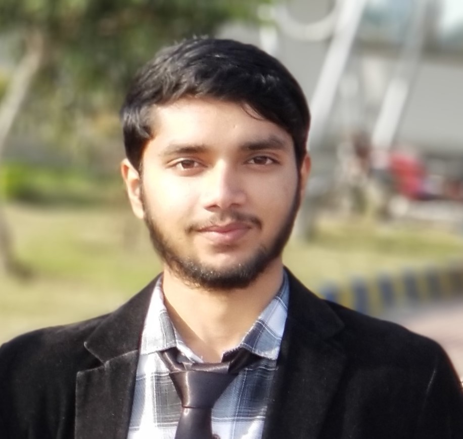

Clinical research · Integration
OpenClinica ↔ Medidata Rave
Bidirectional clinical-data integration that transforms complex ODM data between two enterprise EDC platforms, with secure APIs and dependable synchronization.
Senior Software Engineer · Lahore, Pakistan
I build enterprise Java and Spring Boot platforms, clinical-data integrations, and Python AI/ML products—turning complex requirements into secure, maintainable software that teams can trust.

01 — Experience
My work spans the complete delivery path: architecture, application development, integrations, performance, security, and practical release processes.
Leading end-to-end delivery of Prodeonco, a multitenant accounting SaaS—from stakeholder requirements and system design through production support. The platform combines Java 21, Spring Boot, PostgreSQL, secure RBAC, and resilient CI/CD workflows.
Developed enterprise eClinical services, led the MedDRA medical-coding module, and built the Rave Connector for clinical-study synchronization. Improved a page load from roughly five minutes to seconds and reduced large API responses from about ten minutes to under 20 seconds.
Created an end-to-end Urdu NLP research pipeline for cyberbullying and sentiment analysis, then brought models closer to deployment through Flask and Django inference services.
Contributed to Java Spring Boot applications and microservices across back-end delivery, database operations, debugging, security improvements, and a Java 8 to Java 11 migration.
02 — Selected work
Selected examples of systems that required more than a generic CRUD implementation—each anchored in a real business or research constraint.
Clinical research · Integration
Bidirectional clinical-data integration that transforms complex ODM data between two enterprise EDC platforms, with secure APIs and dependable synchronization.
Financial SaaS · Platform
Multitenant accounting SaaS designed around a double-entry ledger, immutable posted entries, reversals, period locks, tenant isolation, and idempotent financial writes.
Applied AI · Research
Data collection, preprocessing, annotation, and evaluation for Urdu-language NLP research—combining classical ML, deep learning, and deployable model-serving APIs.
03 — Technical range
The strongest work happens when architecture, data, user experience, and operational realities are considered together.
Core strength: scalable Java and Spring Boot services. I pair that foundation with practical full-stack delivery and applied AI when it earns its place in the product.
04 — Achievements & credentials
A blend of professional vetting, research, and hands-on delivery informs a measured approach to building software.
Vetted for high-caliber software delivery, with a profile centered on scalable Java and Spring Boot systems, full-stack development, and applied AI. Explore the full profile or start a conversation through Toptal.
Hire me on ToptalPakistan Regional Winner, recognized for a final-year project on sentiment analysis and cyberbullying detection in Urdu tweets.
Co-authored peer-reviewed research on addressing cyberbullying in Urdu tweets using machine learning and deep learning.
2019–2023 · CGPA 3.67 / 4.0. Research and hands-on engineering shaped a strong foundation in software systems and AI.